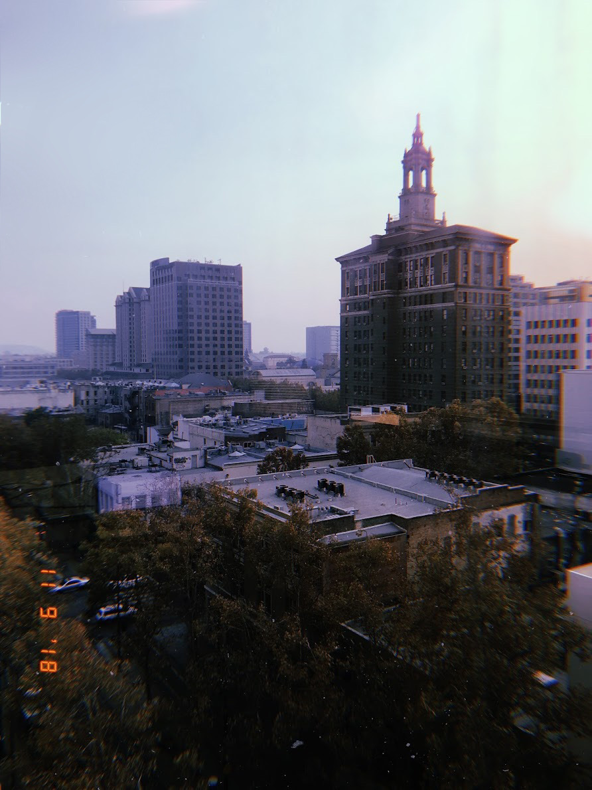

DMA
 🌆 Downtown Nostalgia 🌆
iPhone 7 / Adobe Lightroom
892 × 1190
This photo was taken while being in the conference room of The Mercury News in Downtown San Jose. I captured this very moment as the sky was in a haze due to the 2018 California wildfires that were occurring, which happened to be the deadliest and most destructive wildfires in history. I loved the aesthetic of this photo and I decided to take a quick snapshot before my mom and I left the building. As it did look beautiful on camera, with the natural glow of the sun beaming through the hazy clouds, it still was quite concerning. In that moment, I realized reality itself. The photo came out so crisp on my phone that I couldn’t believe that I was living in that moment. My mind could not help lingering about the aesthetic of the raw image as it made me feel nostalgic of the memories I shared with my mom while exploring San Jose together. The Mercury News had just moved to the building I took this photo in before being on Ridder Park Drive since 1967.
I was very proud of my mother, as she had her little beginnings in Ridder Park. That was her first job, at 18 years young, and she started with a little job near the mailing room. Now, she is the executive assistant to the big bosses. Although she loved the new building and the new sights she was able to look upon, she couldn’t help but always reminisce about the memories she shared at Ridder Park with past coworkers.
The amount of love I have for this woman is like no other. As I was staring across the buildings and towards the streets of the place I call home, I was reminded of the obstacles my mother faced and the hard work she put in to be in the place where she is now, and to put me into my dream school.